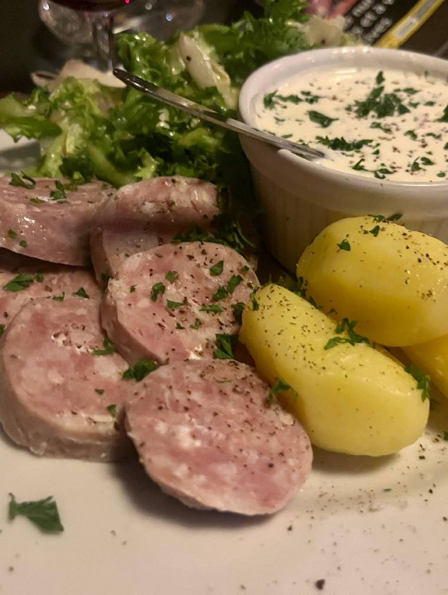

Charcuterie maison

Charcuterie maison
Saucisson à l’ail
Préparation : 1 h
Repos : 12 h
Cuisson : 1 h 30
Ingrédients (pour 1 kg de mêlée environ)
- 620 g d’épaule de porc
- 280 g de gras dur de porc
- 17 g de sel nitrité à 0,6 % exactement
- 60 g d’eau glacée
- 10 g de blanc d’œuf
- 6 g de sucre
- 3 g d’ail dégermé
- 2 g de poivre blanc
- 2 g d’épices au choix
- boyau de bœuf 55/60
Quantités adaptées. Les temps de cuisson ne sont pas recalculés.
- Lire la teneur sur le paquet de sel nitrité : elle doit être de 0,6 %. Peser au dixième de gramme et bien mélanger le paquet.
- Répartir le sel sur le maigre et le gras en proportion de leur poids, ajouter sucre et épices au maigre. Laisser 12 à 24 heures au froid, filmé.
- Hacher le maigre à 10 ou 13 mm et le gras à 6 ou 8 mm, les viandes bien froides.
- Ajouter blanc d’œuf et ail, mélanger jusqu’à ce que la pâte colle, puis incorporer l’eau glacée.
- Embosser serré en 30 à 40 cm, piquer les bulles d’air, égoutter une nuit au froid.
- Plonger dans un bouillon frémissant et maintenir entre 75 et 78 °C pendant 60 à 90 minutes, jusqu’à 71 °C à cœur, tenus 20 minutes.
- Refroidir aussitôt dans l’eau froide, égoutter et mettre au réfrigérateur.
À conserver au froid, jamais au placard
Au réfrigérateur entre 0 et 4 °C : 5 jours au plus. Au congélateur à −18 °C, dès le refroidissement : 2 mois au plus.
Les règles des bocaux
AstuceNe jamais utiliser de nitrite pur, ni augmenter la dose de sel nitrité. À 0,6 %, 17 g apportent environ 102 mg de nitrite.
D’après le guide technique du CEPROC, Le savoir-faire artisan charcutier. Recette ramenée de 10 kg à 1 kg, sans étuvage ni additif facultatif. Cuisson à cœur portée de 68 à 71 °C, conservation réduite.